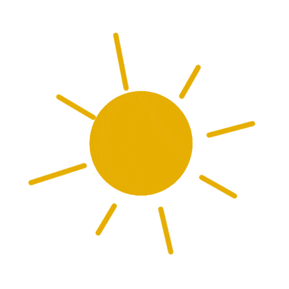
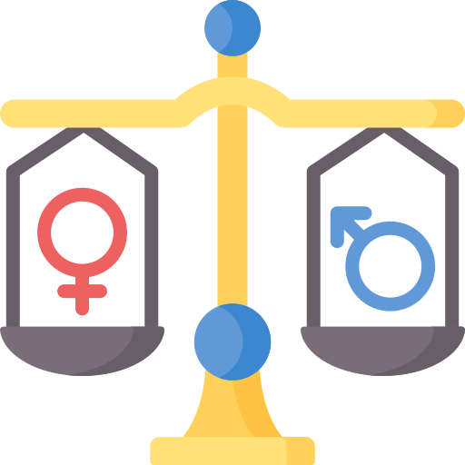
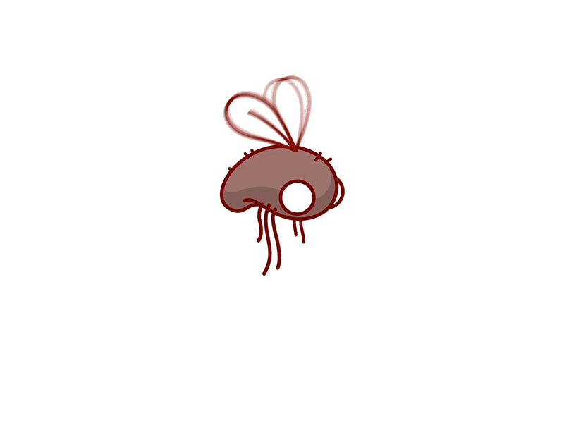
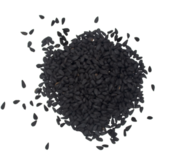
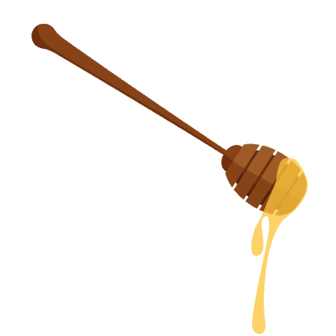

Bukhari Hadith Details
Click on a hadith to view its details here.
Muslim Hadith Details
Click on a hadith to view its details here.
Ayatica
Sacred texts · Living patterns
The Quran and Hadith are foundational texts for almost 2 billion Muslims,
preserved meticulously for over 1400 years.
But Many skeptics question how ancient religious texts
could contain any scientific value or accurate predictions about our modern understanding of the
universe.
Therefore You'll be surprised to discover how these texts
predicted the expansion of the universe,
described embryonic development stages, and revealed oceanic phenomena centuries before modern science could
verify them.
We could spend thousands upon thousands of hours just exploring one of the individual texts we are looking at. Let's go step-by-step before looking at the miracles of the Sahih Bukhari and Sahih Muslim hadith, and start off by analyzing some miracles, linguistic patterns, and numerical patterns of the Quran.
The Quran contains numerous verses that describe scientific phenomena with remarkable accuracy, centuries before their modern discovery. Use the interactive treemap below to explore these verses and more. You can search for specific terms or filter to view scientific miracles specifically.
Pick a verse to view its details!
The above activity allowed for us to get a glimpse of the linguistic patterns, and even uncover some miracles on
our own. Note, the verses signifying miracles (colored in gold) were just some examples. Feel free to use the
treemap to find more!
Although the above activity provides plenty of insight
into some of the miracles of the Quran, let's take a closer look at some of the miracles in more detail...
وَالسَّمَاءَ بَنَيْنَاهَا بِأَيْدٍ وَإِنَّا لَمُوسِعُونَ
Translation: "And the heaven We constructed with strength, and indeed, We are [its] expander." (Surah Adh-Dhariyat, 51:47)
This verse aligns with the modern understanding that the universe is expanding, a concept supported by observations of distant galaxies moving away from us.
وَهُوَ الَّذِي خَلَقَ اللَّيْلَ وَالنَّهَارَ وَالشَّمْسَ وَالْقَمَرَ ۖ كُلٌّ فِي فَلَكٍ يَسْبَحُونَ
Translation: "And it is He who created the night and the day and the sun and the moon; all [heavenly bodies] in an orbit are swimming." (Surah Al-Anbiya, 21:33)
This verse aligns with modern astronomy, which confirms that celestial bodies move in defined orbits.
وَلَقَدْ خَلَقْنَا ٱلْإِنسَـٰنَ مِن سُلَـٰلَةٍۢ مِّن طِينٍۢ ١٢ ثُمَّ جَعَلْنَـٰهُ نُطْفَةًۭ فِى قَرَارٍۢ مَّكِينٍۢ ١٣ ثُمَّ خَلَقْنَا ٱلنُّطْفَةَ عَلَقَةًۭ فَخَلَقْنَا ٱلْعَلَقَةَ مُضْغَةًۭ فَخَلَقْنَا ٱلْمُضْغَةَ عِظَـٰمًۭا فَكَسَوْنَا ٱلْعِظَـٰمَ لَحْمًۭا ثُمَّ أَنشَأْنَـٰهُ خَلْقًا ءَاخَرَ ۚ فَتَبَارَكَ ٱللَّهُ أَحْسَنُ ٱلْخَـٰلِقِينَ ١٤
Translation: "And certainly did We create man from an extract of clay. Then We placed him as a sperm-drop in a firm lodging. Then We made the sperm-drop into a clinging clot, and We made the clot into a lump [of flesh], and We made [from] the lump, bones, and We covered the bones with flesh; then We developed him into another creation. So blessed is Allah , the best of creators." (Surah Al-Mu'minun, 23:12-14)
This verse describes the stages of human development in a way that aligns with modern embryology.
الٓمٓ ١ غُلِبَتِ ٱلرُّومُ ٢ فِىٓ أَدْنَى ٱلْأَرْضِ وَهُم مِّنۢ بَعْدِ غَلَبِهِمْ سَيَغْلِبُونَ ٣ فِى بِضْعِ سِنِينَ ۗ لِلَّهِ ٱلْأَمْرُ مِن قَبْلُ وَمِنۢ بَعْدُ ۚ وَيَوْمَئِذٍۢ يَفْرَحُ ٱلْمُؤْمِنُونَ ٤ بِنَصْرِ ٱللَّهِ ۚ يَنصُرُ مَن يَشَآءُ ۖ وَهُوَ ٱلْعَزِيزُ ٱلرَّحِيمُ ٥
Translation: "Alif-Lãm-Mĩm. The Romans have been defeated in a nearby land. Yet following their defeat, they will triumph within three to nine years. The ˹whole˺ matter rests with Allah before and after ˹victory˺. And on that day the believers will rejoice at the victory willed by Allah. He gives victory to whoever He wills. For He is the Almighty, Most Merciful." (Surah Ar-Rum (Romans), 30:1-5)
There was a war between the Persians and Romans, and the Persians defeated the Romans (it was not even close). They occupied their lands and besieged them at Constantinople. Persians at this time would worship the sun and fire, and the Romans were people of the scripture, so naturally the Muslims were more inclined to support them, while the polytheists of Makkah would support the Persians. When the news of the Persians' siege of the Romans came to the Arabian Peninsula, the people of Mecca would gloat to the Muslims , which would distress them. However, these Verses (Verses 1-5 of The Romans) were revealed depicting that the Romans will rejoice at victory against the Persians. After just a few years the Romans defeated the Persians, manifesting another miracle of the Quran.
The verses mention the place, "in the nearer land", which means the place where the battle took place. The battle had actually taken place on the lowest point of the surface of the Earth. Additionally, concerning the time, Allah's statement, "within three to nine years" clearly defined the time that the victory would take place, and it actually took place approximately after nine years. In addition, the prophesied Roman victory over the Persians coincided with the Muslim victory over the polytheists. (Source: The Unchallengeable Miracles of the Quran, Yusuf Al-Hajj Ahmad)
ٱلَّذِى جَعَلَ لَكُمُ ٱلْأَرْضَ مَهْدًۭا وَسَلَكَ لَكُمْ فِيهَا سُبُلًۭا وَأَنزَلَ مِنَ ٱلسَّمَآءِ مَآءًۭ فَأَخْرَجْنَا بِهِۦٓ أَزْوَٰجًۭا مِّن نَّبَاتٍۢ شَتَّىٰ
Translation: "˹He is the One˺ Who has laid out the earth for ˹all of˺ you, and set in it pathways for you, and sends down rain from the sky, causing various types of plants to grow,." (Surah Ta-Ha, 20:53)
Here is the translation of the translation of zauj (plural azwaj) whose original meaning is: 'that which, in the company of another, forms a pair'; the word is used just as readily for a married couple as for a pair of shoes. This is describing how plants come in pairs, implying sexual plant reproduction, which was not something that was known at the time of the Quran.
وَهُوَ ٱلَّذِى يُرْسِلُ ٱلرِّيَـٰحَ بُشْرًۢا بَيْنَ يَدَىْ رَحْمَتِهِۦ ۖ حَتَّىٰٓ إِذَآ أَقَلَّتْ سَحَابًۭا ثِقَالًۭا سُقْنَـٰهُ لِبَلَدٍۢ مَّيِّتٍۢ فَأَنزَلْنَا بِهِ ٱلْمَآءَ فَأَخْرَجْنَا بِهِۦ مِن كُلِّ ٱلثَّمَرَٰتِ ۚ كَذَٰلِكَ نُخْرِجُ ٱلْمَوْتَىٰ لَعَلَّكُمْ تَذَكَّرُونَ
Translation: "He is the One Who sends the winds ushering in His mercy. When they bear heavy clouds, We drive them to a lifeless land and then cause rain to fall, producing every type of fruit. Similarly, We will bring the dead to life, so perhaps you will be mindful." (Surah Al-A'raf (The Heights), 57)
As you see, the Quran stated 1.400 years ago that clouds were not light at all and described them as "heavy clouds".
What do scientists say regarding the issue? Are clouds really as heavy as the Quran states?
According to the research made in recent years, quite astonishing figures about the weight of clouds have been found. For example, a cumulonimbus cloud, known as the thunder cloud, can contain up to 300.000 tons of water. Yes, you did not misread it; we are mentioning clouds as heavy as 300.000 tons.
The fact that a mass of 300.000 tons is caused to stand in the sky without any support is something that astonishes the mind. It is more interesting that this information is mentioned in the Quran.
The weight of the precipitation that covers an area of 50 kilometer square at a height of 1 centimeter is about half a ton.
Now, let us think of this: At the time when the Qur'an was revealed, it was impossible for people to have this information about the weight of clouds. Furthermore, we probably thought that clouds were very light before we learned this fact. However, clouds weigh hundreds of thousands of tons and this fact is included in the Quran.
These reports lead many believers to ask: how could such detail about clouds appear in a seventh-century revelation? Sincere readers differ on interpretation, but Muslims regard the Quran as the word of Allah.
What cannot be dismissed lightly, for Muslim readers, is that the Quran speaks of "heavy clouds" and of winds driving them to barren land so that rain brings life — while affirming that the same Lord who manages creation revealed the Book. (Source: Questions on Islam)
We've explored some of the remarkable scientific miracles in the Quran - from the expansion of the universe to the intricacies of plant reproduction. But the miracles of the Quran extend beyond scientific phenomena into its linguistic structure and recurring themes.
Let's shift our focus to analyze the patterns and frequencies of words in the Quran's English translation. Through this interactive word cloud, we can discover which concepts and themes appear most frequently, and explore how they connect across different chapters and verses.
You can adjust the word grouping size (n-gram) to find common phrases, and set minimum frequency thresholds to focus on the most significant patterns. Click any word or phrase to see all verses where it appears.
Explore the most common words in the Quran's English translation
Click on a word to see verses containing it!
The Quran is full of chapters and verses for us to turn to in times of distress and anxiety. One such Surah is Surah Ad-Duha, which was revealed to the Prophet Muhammad (ﷺ) when he was in a time of distress.
وَالضُّحَىٰ ﴿1﴾ وَاللَّيْلِ إِذَا سَجَىٰ ﴿2﴾ مَا وَدَّعَكَ رَبُّكَ وَمَا قَلَىٰ ﴿3﴾ وَلَلْآخِرَةُ خَيْرٌ لَكَ مِنَ الْأُولَىٰ ﴿4﴾ وَلَسَوْفَ يُعْطِيكَ رَبُّكَ فَتَرْضَىٰ ﴿5﴾ أَلَمْ يَجِدْكَ يَتِيمًا فَآوَىٰ ﴿6﴾ وَوَجَدَكَ ضَالًّا فَهَدَىٰ ﴿7﴾ وَوَجَدَكَ عَائِلًا فَأَغْنَىٰ ﴿8﴾ فَأَمَّا الْيَتِيمَ فَلَا تَقْهَرْ ﴿9﴾ وَأَمَّا السَّائِلَ فَلَا تَنْهَرْ ﴿10﴾ وَأَمَّا بِنِعْمَةِ رَبِّكَ فَحَدِّثْ
In this Surah, Allah is directly communicating with the Prophet (ﷺ). This was an early Meccan Surah so it was in the early stages of Prophethood where Muhammad (ﷺ) was under a lot of stress and anxiety. He experienced mockery and ridicule from his personal friends, clansmen, and neighbors because they were not receptive to his message. During this time he also felt that Allah had abandoned him. Allah knew better and was giving him a break since if he "had continuously been exposed to the intensely bright light of Revelation (Wahy) [his] nerves could not have endured it. Therefore, an interval was given in order to afford [him] peace and tranquility.” Allah sent down this Surah to comfort him and let him know he had not forgotten him. (Source)
As a takeaway, this Surah reminds us that Allah is always with us, and that we should not despair in hardship. Whatever the difficulty, we are reminded that Allah has not left us, and that ease follows hardship. Many turn to this Surah in distress and find comfort in its meaning.
The word cloud activity has given us a good idea of the linguistic patterns of the Quran, and even slowly introduced us to some of the numerical patterns as well. Before wrapping up our time exploring the Quran and move onto some Hadith, below are some examples of numerical patterns in the Quran.
يَوْم
A frequently cited count: Some writers report that the singular word "day" (يَوْم) occurs 365 times in the Quran under a particular counting method — matching the days of a common solar year.
Such tallies depend on how words are defined and counted, and specialists disagree. They are presented here as a pattern people discuss, not as a settled linguistic proof.

بَحْر - بَرّ
A frequently cited ratio: Some counts put "sea" at 32 occurrences and "land" at 13; writers then compare 32:45 (~71% / ~29%) to approximate global water-to-land surface ratios.
Geographic percentages vary by measurement method, and Quranic word counts are debated. Treat this as an interesting claim found in popular literature, not as an uncontested theorem.
حَيَاة - مَوْت
A cited symmetry: Under certain counting methods, "life" (حَيَاة) and "death" (مَوْت) are each reported 145 times.
Again, results turn on counting rules. The equal figure is often read thematically as life and death paired in the Quranic message.

رَجُل - اِمْرَأَة
A cited balance: Some counts report "man" (رَجُل) and "woman" (ٱمْرَأَة) each 24 times.
Word-count equality is not identical to a full legal or theological claim; it is one textual observation among others about representation in the Arabic lexicon of the Quran.
وَكَذَٰلِكَ جَعَلْنَاكُمْ أُمَّةً وَسَطًا
A noted placement: Surah Al-Baqarah has 286 verses; verse 143 — the middle by count — contains وَسَطًا in "Thus We have made you a middle community."
Some readers find the alignment of wording and position striking; others note that "middle" here primarily means balanced/just. Both the literary observation and the classical meaning deserve care.

Now that we've done some exploration of the Quran, let's take a look through the hadith, more specifically the Sahih Bukhari and Sahih Muslim. A few examples of miracles in the hadith are boxes highlighted in gold.
The above activity allowed for us to get a glimpse of the linguistic patterns, and even uncover some miracles on
our own. Note, the verses signifying miracles (colored in gold) were just some examples. Feel free to use the
treemap to find more!
Although the above activity provides plenty of insight
into some of the miracles of the Hadith, let's take a closer look at some of them in more detail...
Narrated Abu Huraira: The Prophet said "If a house fly falls in the drink of anyone of you, he should dip it (in the drink), for one of its wings has a disease and the other has the cure for the disease."
In the hadith: The Prophet Muhammad (peace be upon him) mentioned that if a fly falls into a drink, one wing carries disease while the other carries the cure. Modern research supports this, indicating that certain microorganisms on fly wings produce antimicrobial substances. For instance, a study published in the Journal of Nutritional Science and Vitaminology found that the right wing of the house fly (Musca domestica) contains antimicrobial agents capable of neutralizing microbial contaminants in drinks.


Anas reported that the people of Mecca demanded from Allah's Messenger (may peace be upon him) that he should show them (some) signs (miracles) and he showed tlicin the splitting of the moon. This hadlth has been narrated on the authority of Anas through another chain of transmitters.
In the sources: During the Meccan era, the Quraysh challenged Prophet Muhammad (peace be upon him) to show a sign of his Prophethood, leading to the miraculous splitting of the moon. This event is recorded in the Quran (54:1), where Allah states, "The hour drew nigh and the moon was rent in twain." The miracle strengthened the faith of Muslims and left the disbelievers perplexed, dismissing it as magic. Historical accounts, including an Indian manuscript preserved in the India Office Library, describe King Chakrawati Farmas witnessing the event, traveling to meet the Prophet, embracing Islam, and later becoming one of his Companions. Islamic references further preserve details of this Companion, known among the Arabs as Sirbanak, highlighting his unique role in the Prophet's history.
Abu Huraira reported that he heard Allah's Messenger (may peace be upon him) as saying: Nigella seed is a remedy for every disease except death. This hadith has been narrated through another chain of transmitters but with a slight variation of wording.
Note: The statement about the Nigella seed (black seed) being a remedy for every disease except death is considered miraculous because it highlights the remarkable medicinal properties of this small seed, which modern science has increasingly validated. Studies have shown that black seed contains compounds with antimicrobial, anti-inflammatory, antioxidant, and immune-boosting effects, making it beneficial for a wide range of health conditions. The foresight of such comprehensive therapeutic potential over 1,400 years ago, in a time with limited medical knowledge, is seen by many as evidence of divine inspiration.


Narrated Abu Huraira: Allah's Apostle said, "The Hour will not be established (1) till two big groups fight each other whereupon there will be a great number of casualties on both sides and they will be following one and the same religious doctrine, (2) till about thirty Dajjals (liars) appear, and each one of them will claim that he is Allah's Apostle, (3) till the religious knowledge is taken away (by the death of Religious scholars) (4) earthquakes will increase in number (5) time will pass quickly, (6) afflictions will appear, (7) Al-Harj, (i.e., killing) will increase, (8) till wealth will be in abundance ---- so abundant that a wealthy person will worry lest nobody should accept his Zakat, and whenever he will present it to someone, that person (to whom it will be offered) will say, 'I am not in need of it, (9) till the people compete with one another in constructing high buildings, (10) till a man when passing by a grave of someone will say, 'Would that I were in his place (11) and till the sun rises from the West. So when the sun will rise and the people will see it (rising from the West) they will all believe (embrace Islam) but that will be the time when: (As Allah said,) 'No good will it do to a soul to believe then, if it believed not before, nor earned good (by deeds of righteousness) through its Faith.' (6.158) And the Hour will be established while two men spreading a garment in front of them but they will not be able to sell it, nor fold it up; and the Hour will be established when a man has milked his she-camel and has taken away the milk but he will not be able to drink it; and the Hour will be established before a man repairing a tank (for his livestock) is able to water (his animals) in it; and the Hour will be established when a person has raised a morsel (of food) to his mouth but will not be able to eat it."
Among reflections on the signs: Prophet Muhammad (peace be upon him) foretold events that align strikingly with real-world developments, reflecting the miraculous nature of his prophecies. He predicted the competition in constructing tall buildings, vividly seen in the modern race for skyscrapers, particularly in the UAE with the Burj Khalifa. He spoke of large-scale wars between groups with similar ideologies, such as the World Wars fought by nations often rooted in shared political or cultural ideologies. The rise of false claimants to prophethood corresponds to numerous self-proclaimed messiahs in recent history. The loss of authentic religious knowledge is evident in the fading influence of traditional scholarship amidst misinformation. He also foretold increased seismic activity, aligning with documented rises in earthquake occurrences. The prediction of wealth so abundant that people refuse charity is seen in wealthy nations where basic needs are widely met, yet inequality persists. Finally, the accelerated pace of life resonates with the global sense of time passing quickly in an era of rapid technological and social change. These fulfilled events demonstrate the divine origin of these prophecies.
Narrated Abu Sa`id Al-Khudri: A man came to the Prophet and said, "My brother has some Abdominal trouble." The Prophet said to him "Let him drink honey." The man came for the second time and the Prophet said to him, 'Let him drink honey." He came for the third time and the Prophet said, "Let him drink honey." He returned again and said, "I have done that ' The Prophet then said, "Allah has said the truth, but your brother's `Abdomen has told a lie. Let him drink honey." So he made him drink honey and he was cured.
Note: The incident illustrates a miracle rooted in the Prophet Muhammad's (peace be upon him) knowledge of honey's healing properties, which modern science has since validated. Honey is now known to have antimicrobial, anti-inflammatory, and digestive health benefits due to compounds like hydrogen peroxide, methylglyoxal, and natural enzymes. In this context, the Prophet's insistence on honey as a remedy aligns with today's understanding of its ability to treat gastrointestinal issues, even when its effects might not be immediately apparent. This prophetic insight, given over 1,400 years ago without scientific tools, highlights a remarkable alignment with modern medical knowledge, affirming its miraculous nature.

Ancient religious texts have fascinated scholars for centuries, with the Quran and Hadith making specific claims about the natural world that seem to transcend their historical context. These texts, preserved for over 1,400 years, contain thousands of verses describing everything from celestial bodies to human embryology.
Modern scientific analysis demands rigorous evidence and reproducible results. Many argue that finding scientific accuracy in ancient texts is merely confirmation bias - seeing patterns where we want to see them. Without systematic analysis methods, these claims remain controversial.
By applying data visualization and statistical analysis, we can systematically examine these claims, revealing both confirmed correlations and potential coincidences in a transparent, reproducible way. Our analysis revealed:
Using computational analysis, we identified recurring scientific themes across chapters. Our methodology included:
We acknowledge several important considerations:
Our findings suggest several areas for further study:
This project demonstrates how modern data visualization can unlock hidden patterns in ancient texts. The implications extend beyond religious studies – this approach could revolutionize how we analyze any historical document. Our interactive visualizations have transformed abstract concepts into tangible patterns, making complex relationships accessible to everyone.